Capítulo 9 Simulación de Distribuciones Multidimensionales
Pendiente: ejemplos y teoría
9.1 Introducción
Las funciones implementadas en el paquete base de R permiten simular fácilmente en el caso independiente:
f1 <- function(x) dnorm(x)
# 2/pi*sqrt(1-x^2)
# ifelse(abs(x) < 1, 2/pi*sqrt(1-x^2), 0)
f2 <- function(x) dnorm(x, -0.5, 0.5)
curve(f1, -3, 3, ylim = c(0, f2(-0.5)), ylab = "f_i(x)")
curve(f2, add = TRUE, lty = 2)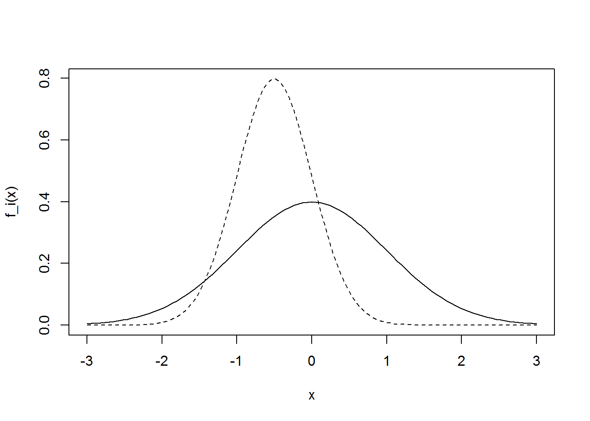
rnorm(2, c(0, -0.5), c(1, 0.5))## [1] 0.3101059 -0.30738649.2 Factorización de la matriz de covarianzas
Considerar la variable funcional: \[Y(x)=\sin\left( 2\pi x\right) +\varepsilon\left( x\right)\] con \(0\leq x\leq1\) y \(Cov(\varepsilon\left( x\right) ,\varepsilon\left( y\right) )=e^{-\left\Vert x-y\right\Vert }\). Obtener una muestra de tamaño 100 de esta variable considerando 50 puntos de discretización.
# Datos funcionales (proceso temporal)
n <- 100
p <- 50
x <- seq(0, 1, length = p)
# Media
mu <- sin(2*pi*x)
# Covarianzas
x.dist <- as.matrix(dist(x))
x.cov <- exp(-x.dist)
# Factorización de la matriz de covarianzas
U <- chol(x.cov)
L <- t(U)
# Simulación:
# mu + t(U) %*% rnorm(p)
mu + L %*% rnorm(p)## [,1]
## 1 -0.354713362
## 2 -0.254645931
## 3 0.108384084
## 4 0.373410413
## 5 0.845903395
## 6 0.791114347
## 7 0.712621857
## 8 0.310512876
## 9 0.467181248
## 10 0.514402142
## 11 0.538233226
## 12 0.542684084
## 13 -0.029012959
## 14 0.099333515
## 15 -0.099029407
## 16 -0.088234348
## 17 0.140269595
## 18 -0.005929781
## 19 -0.205293535
## 20 -0.080812130
## 21 -0.235480757
## 22 -0.519987224
## 23 -0.511841431
## 24 -0.622451743
## 25 -0.965344804
## 26 -1.003376470
## 27 -1.282877802
## 28 -1.230473990
## 29 -1.089289335
## 30 -1.319207757
## 31 -1.370017003
## 32 -1.280693738
## 33 -1.129617294
## 34 -1.416710554
## 35 -1.079475914
## 36 -1.207896893
## 37 -1.037422511
## 38 -0.915464452
## 39 -1.029191174
## 40 -1.024384328
## 41 -0.936040576
## 42 -0.932974928
## 43 -0.931278463
## 44 -0.976758815
## 45 -0.921136004
## 46 -1.017647499
## 47 -0.885233429
## 48 -1.026637295
## 49 -0.606256449
## 50 -0.266320664# Simulación
set.seed(54321)
z <- matrix(rnorm(n * p), nrow = p)
# y <- mu + t(U) %*% z
y <- mu + L %*% z
matplot(x, y, type = "l")
lines(x, mu, lwd=2)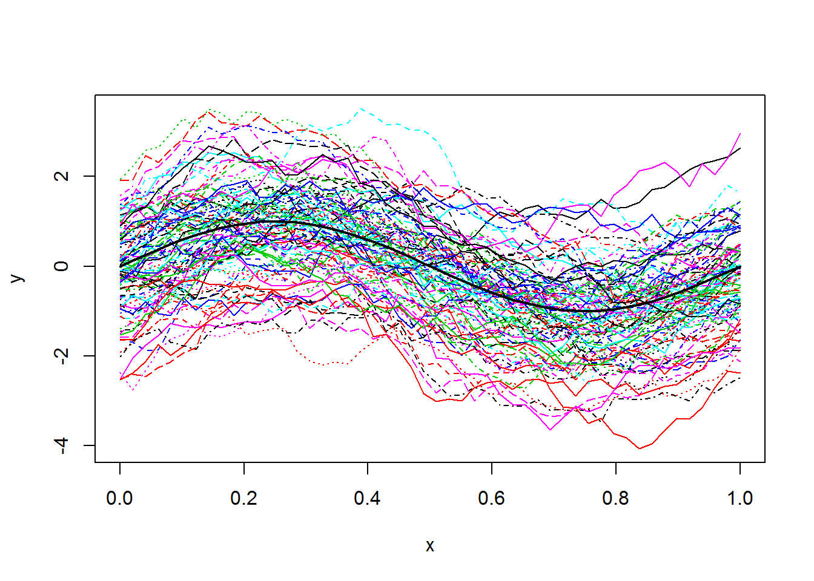
Alternativamente se podría emplear, por ejemplo, la funcion mvrnorm del paquete MASS que emplea la factorización espectral (eigen)
library(MASS)
y <- mvrnorm(100, mu, x.cov)
matplot(x, t(y), type = "l")
lines(x, mu, lwd=2)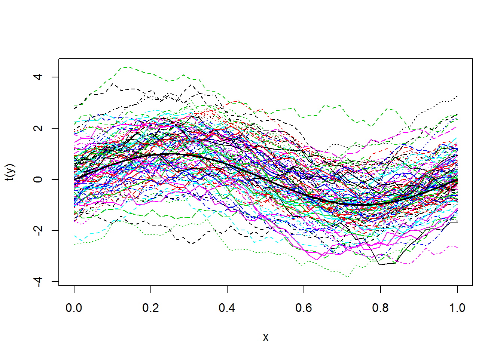
9.3 Simulación condicional e incondicional
Considerando un proceso espacial bidimensional normal \(Z(\mathbf{s})\equiv Z(x,y)\) de media 0 y covariograma exponencial: \[Cov(Z(\mathbf{s}_{1}),Z(\mathbf{s}_{2})) = C(\left\Vert \mathbf{s}_{1}-\mathbf{s}_{2}\right\Vert ) = e^{-\left\Vert \mathbf{s}_{1}-\mathbf{s}_{2}\right\Vert }.\]
geoR.
library(geoR)- Obtener una simulación del proceso en las posiciones \(\left\{(0,0),(0,1),(1,0),(1,1)\right\}.\)
# SIMULACIÓN INCONDICIONAL
# Posiciones datos
nx <- c(2,2)
n <- prod(nx)
data.s <- expand.grid(x = seq(0, 1, l=nx[1]), y = seq(0, 1, l=nx[2]))
plot(data.s, type = "p", pch = 20) # Representar posiciones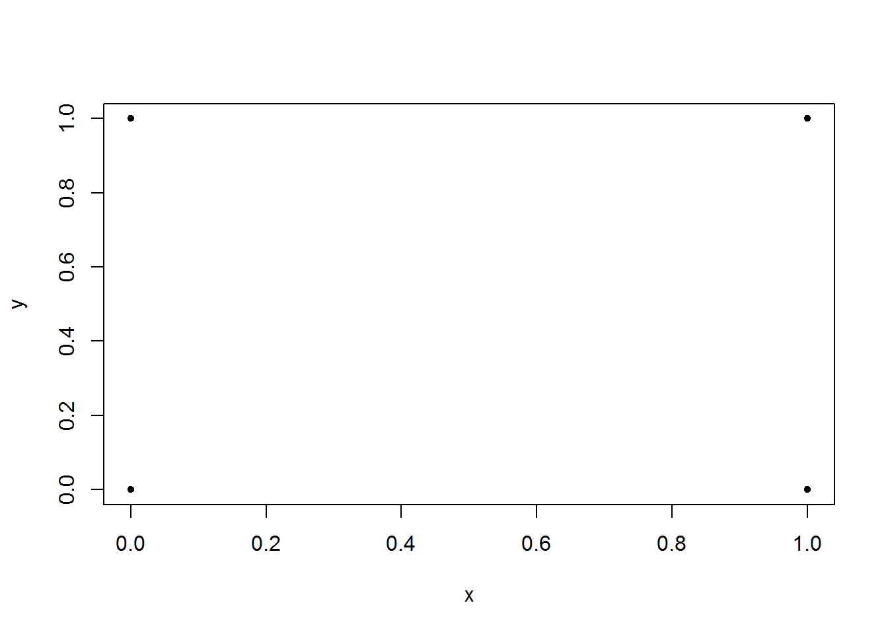
# Modelo de dependencia
curve(cov.spatial(x, cov.pars=c(1,1)), from = 0, to = 3,
xlab = "distancia", ylab = "covarianza", ylim = c(0,1),
main = "modelo de dependencia")
abline(h = 0, lty = 3)
abline(v = 1, lty = 3)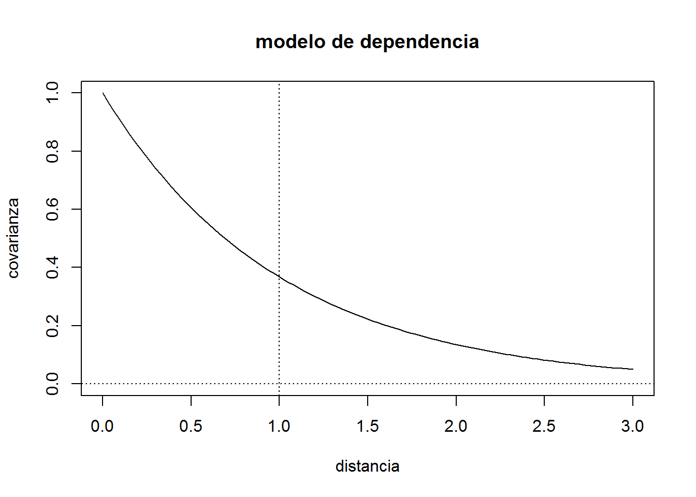
# Matriz de varianzas covarianzas
cov.matrix <- varcov.spatial(coords=data.s, cov.pars=c(1,1))$varcov
cov.matrix## [,1] [,2] [,3] [,4]
## [1,] 1.0000000 0.3678794 0.3678794 0.2431167
## [2,] 0.3678794 1.0000000 0.2431167 0.3678794
## [3,] 0.3678794 0.2431167 1.0000000 0.3678794
## [4,] 0.2431167 0.3678794 0.3678794 1.0000000# Simular valores
set.seed(54321)
L <- t(chol(cov.matrix))
# Bucle simulación
nsim <- 1 # 1000
for (i in 1:nsim) {
z <- L %*% rnorm(n)
# calcular estadísticos, errores,...
}
z## [,1]
## [1,] -0.1789007
## [2,] -0.9287775
## [3,] -0.8967493
## [4,] -1.9876270# Simular utilizando geoR
z <- grf(n, grid="reg", cov.pars=c(1,1))## grf: generating grid 2 * 2 with 4 points
## grf: process with 1 covariance structure(s)
## grf: nugget effect is: tausq= 0
## grf: covariance model 1 is: exponential(sigmasq=1, phi=1)
## grf: decomposition algorithm used is: cholesky
## grf: End of simulation procedure. Number of realizations: 1names(z)## $coords
## [1] "x" "y"
##
## $data
## [1] "data"
##
## $borders
## [1] "borders"
##
## $other
## [1] "cov.model" "nugget" "cov.pars" "kappa"
## [5] "lambda" "aniso.pars" "method" ".Random.seed"
## [9] "messages" "call"z$coords## x y
## [1,] 0 0
## [2,] 1 0
## [3,] 0 1
## [4,] 1 1z$data## [1] -0.4080665 -1.1688230 -1.8384001 1.3498610- Generar simulaciones en una rejilla regular \(10\times10\) en el cuadrado unidad \([0,1] \times [0,1]\) condicionadas a los valores generados en el apartado anterior.
# SIMULACIÓN CONDICIONAL
nnx <- c(10,10)
nn <- prod(nnx)
ndata.s <- expand.grid(x=seq(0, 1, l = nnx[1]), y = seq(0, 1, l = nnx[2]))
plot(data.s, type = "p", pch = 20) # Representar posiciones
points(ndata.s)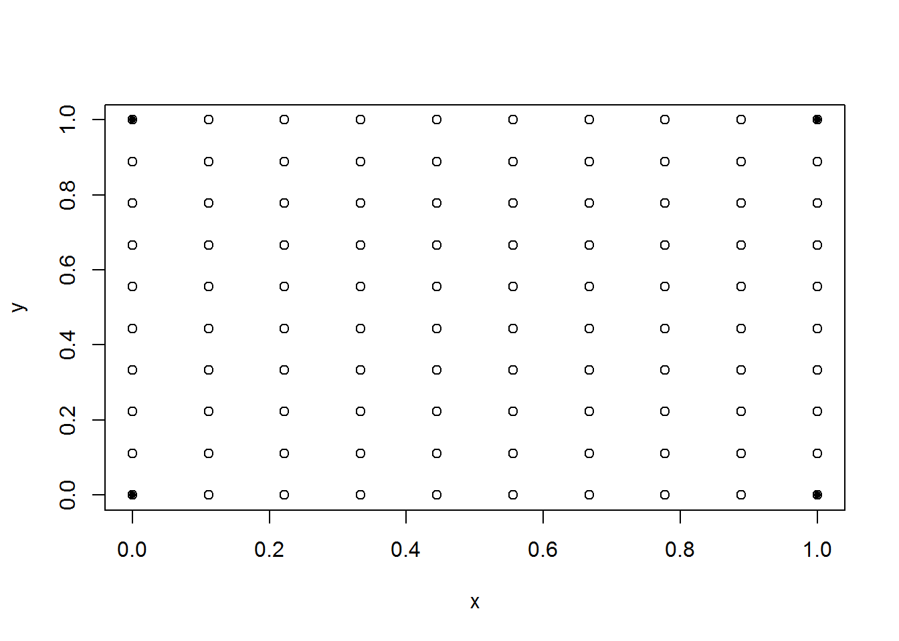
set.seed(54321)
s.out <- output.control(n.predictive = 100)
kc <- krige.conv(z, loc = ndata.s,
krige = krige.control(cov.pars = c(1,1)),output = s.out)## krige.conv: results will be returned only for prediction locations inside the borders
## krige.conv: model with constant mean
## krige.conv: sampling from the predictive distribution (conditional simulations)
## krige.conv: Kriging performed using global neighbourhood# Generar gráficos
par.old <- par(mfrow=c(2,2), mar=c(3.5,3.5,1,0), mgp=c(1.5,.5,0))
zlim <- range(kc$simul[,1:4]) # Escala común
image(kc, val=kc$simul[,1], main="simul. cond. 1", zlim=zlim)
image(kc, val=kc$simul[,2], main="simul. cond. 2", zlim=zlim)
image(kc, val=kc$simul[,3], main="simul. cond. 3", zlim=zlim)
image(kc, val=kc$simul[,4], main="simul. cond. 3", zlim=zlim)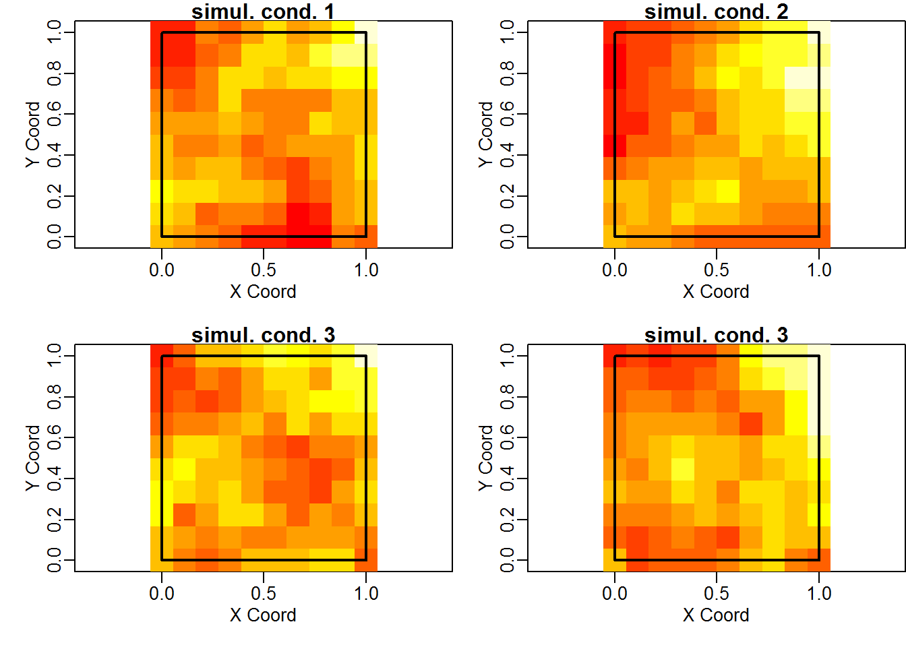
par(par.old)Los valores en las posiciones \(\left\{(0,0),(0,1),(1,0),(1,1)\right\}\) coinciden con los generados en el apartado anterior.
9.4 Simulación basada en cópulas
Consideramos una v.a. bidimensional con distribuciónes marginales uniformes y distribución bidimensional determinada por la cópula de Clayton.
- Teniendo en cuenta que en este caso: \[C_{u}^{-1}(w)\equiv\left( u^{-\alpha}\left( w^{-\frac{\alpha}{\alpha+1}}-1\right) + 1 \right)^{-\frac{1}{\alpha}},\] diseñar una rutina que permita generar una muestra de tamaño \(n\) de esta distribución.
rcclayton <- function(alpha, n) {
val <- cbind(runif(n), runif(n))
val[, 2] <- (val[, 1]^(-alpha) *
(val[, 2]^(-alpha/(alpha + 1)) - 1) + 1)^(-1/alpha)
return(val)
}- Utilizando la rutina anterior generar una muestra de tamaño 10000 y representar gráficamente los valores obtenidos y sus distribuciones marginales.
set.seed(54321)
rcunif <- rcclayton(2,10000)
plot(rcunif, xlab = "u", ylab = "v")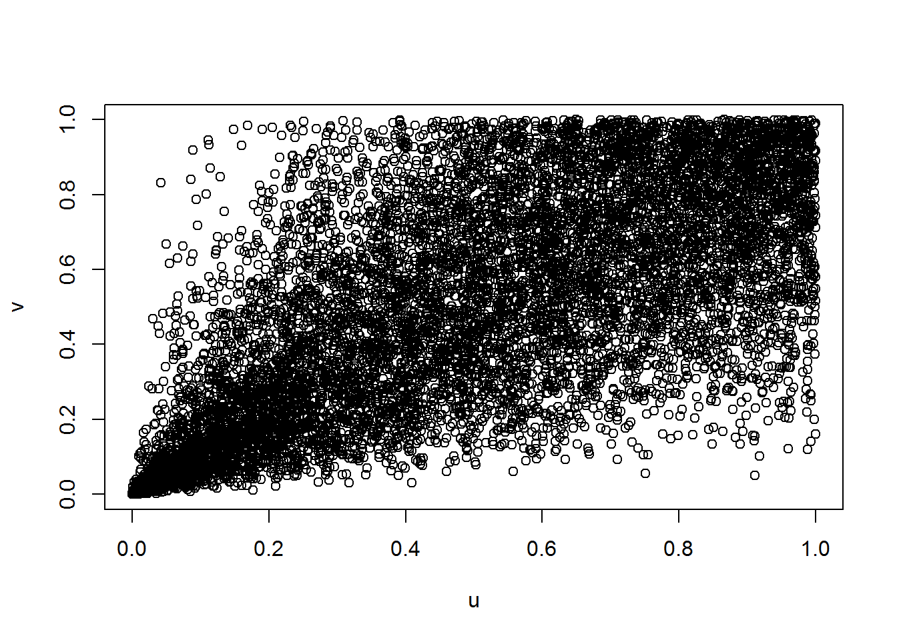
Representar la densidad conjunta (con sm::sm.density()) y las marginales:
# Densidad conjunta
# if(!require(sm)) stop('Required pakage `sm` not installed.')
sm::sm.density(rcunif)## Warning: weights overwritten by binning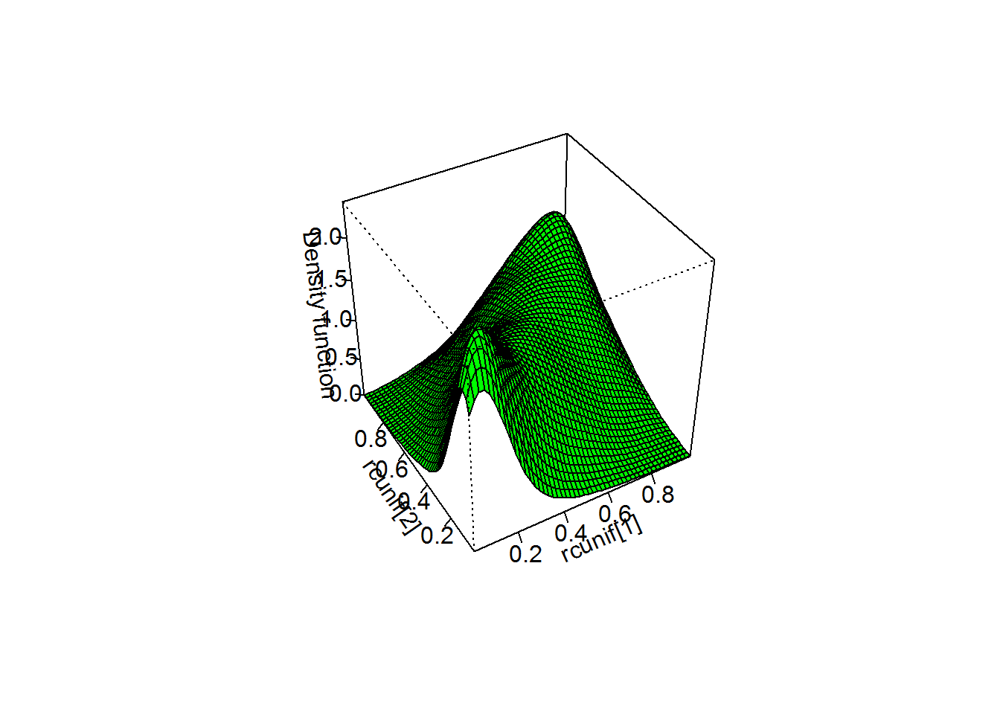
# Distribuciones marginales
hist(rcunif[,1], freq = FALSE)
abline(h = 1)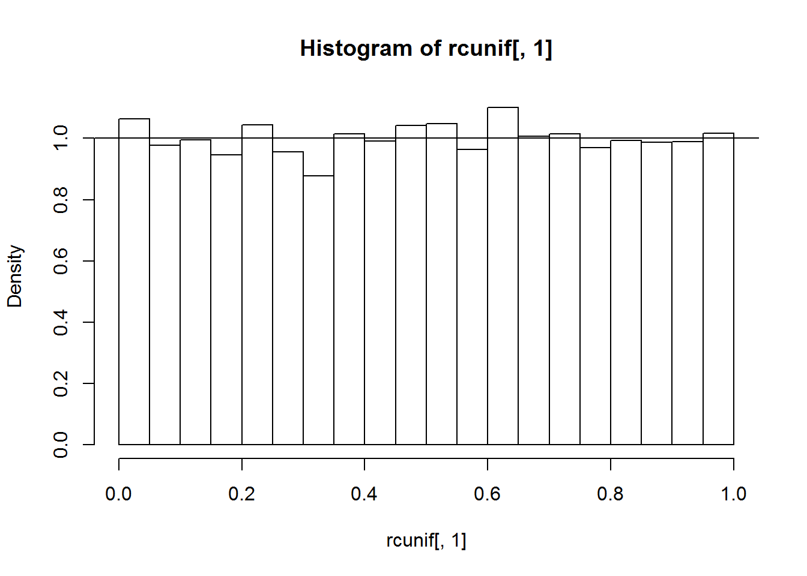
hist(rcunif[,2], freq = FALSE)
abline(h = 1)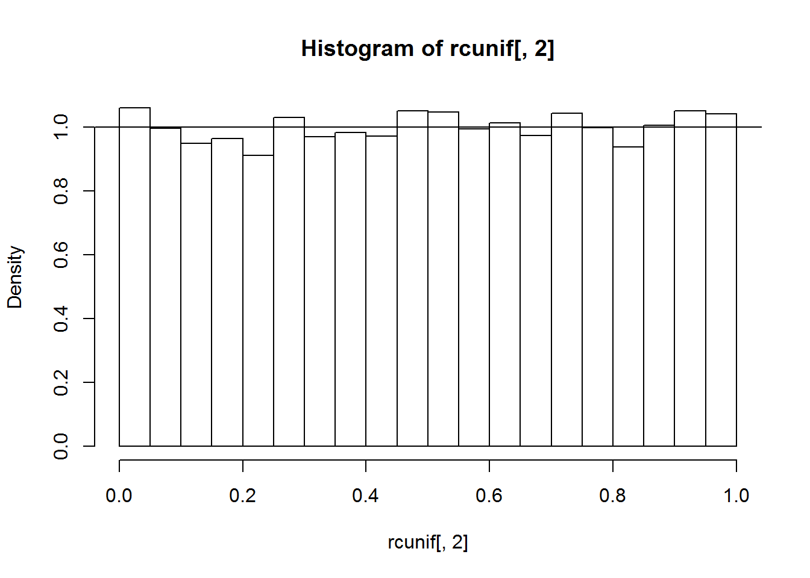
Empleando el paquete copula:
if(!require(copula)) stop('Required pakage `copula` not installed.')
clayton.cop <- claytonCopula(2, dim = 2) # caso bidimensional
y <- rCopula(10000, clayton.cop)
plot(y)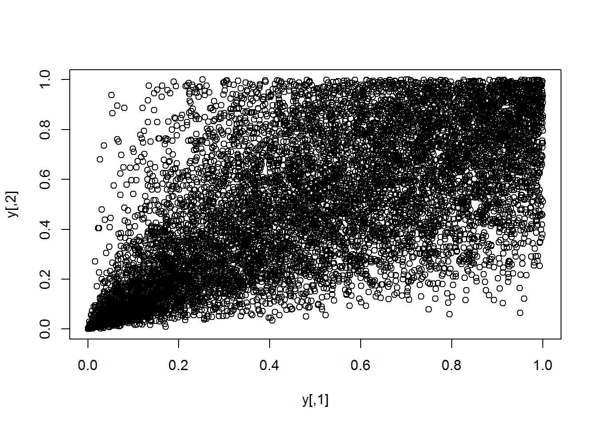
clayton.cop <- claytonCopula(2, dim = 3) # caso tridimensional
y <- rCopula(10000, clayton.cop)
scatterplot3d::scatterplot3d(y)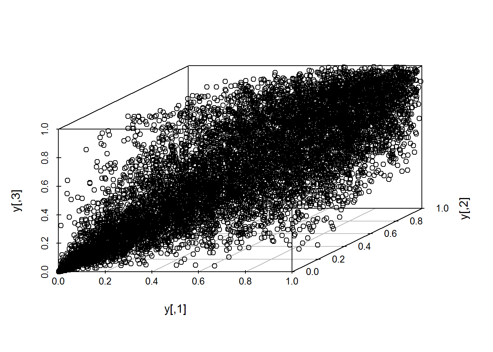
- A partir de la muestra anterior generar una muestra de una v.a. bidimensional con distribuciones marginales exponenciales de parámetros 1 y 2 respectivamente (y distribución bidimensional determinada por la cópula de Clayton).
rcexp <- cbind(qexp(rcunif[,1], 1), qexp(rcunif[,2], 2))
plot(rcexp, xlab = "exp1", ylab = "exp2")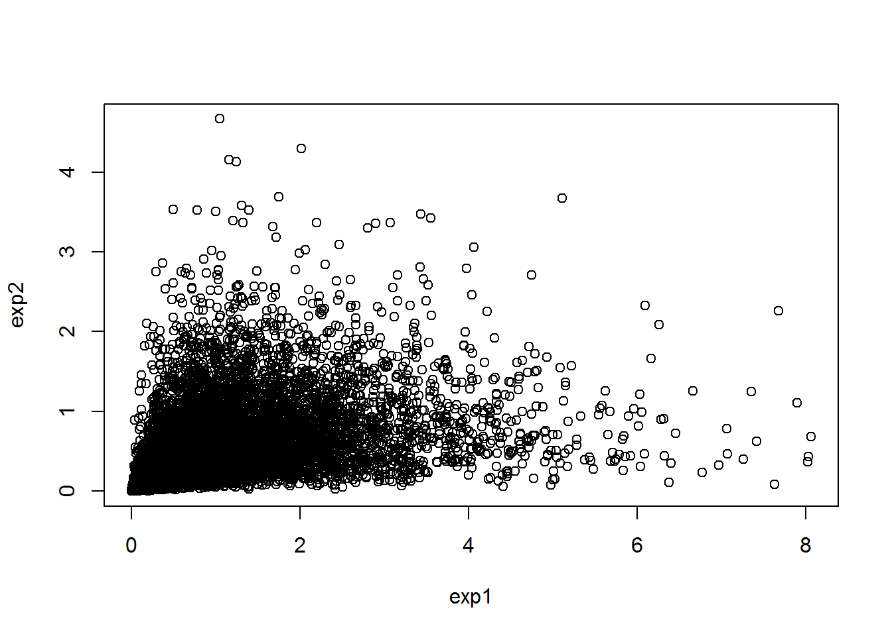
# Distribuciones marginales
hist(rcexp[,1], freq = FALSE)
curve(dexp(x,1), add = TRUE)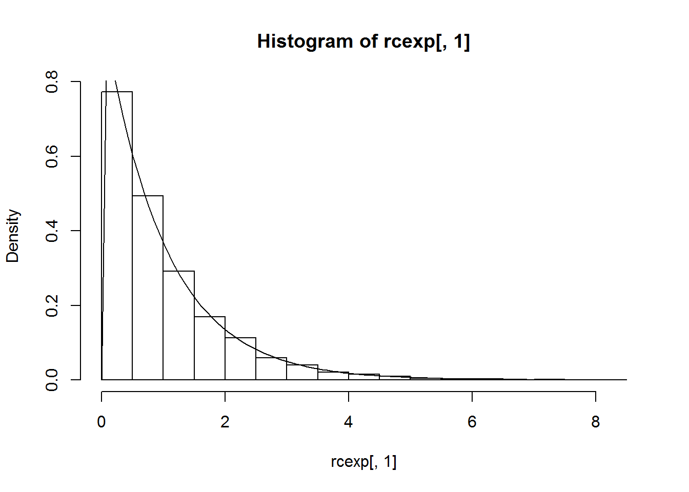
hist(rcexp[,2], freq = FALSE)
curve(dexp(x,2), add = TRUE)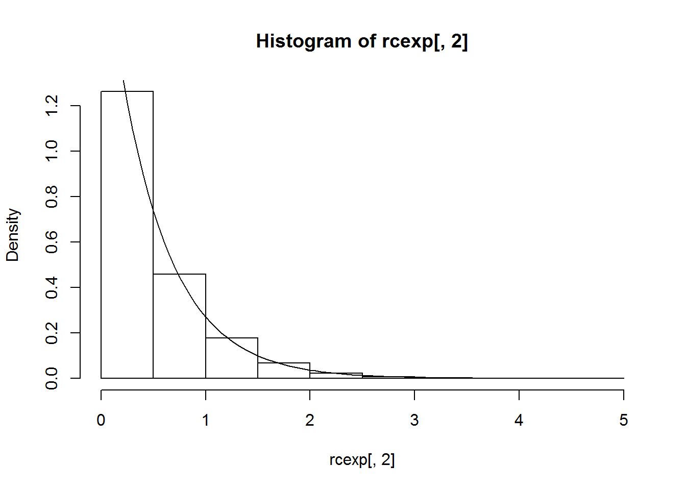
# ...
z <- 1:10
xy <- matrix(z, ncol = 2)
xy## [,1] [,2]
## [1,] 1 6
## [2,] 2 7
## [3,] 3 8
## [4,] 4 9
## [5,] 5 10as.vector(xy)## [1] 1 2 3 4 5 6 7 8 9 10# ...9.5 Simulación de distribuciones multidimensionales discretas
9.5.1 Simulación de una variable discreta bidimensional
Consideramos datos recogidos en un estudio de mejora de calidad en una fábrica de semiconductores. Se obtuvo una muestra de obleas que se clasificaron dependiendo de si se encontraron partículas en la matriz que producía la oblea y de si la calidad de oblea era buena (Para más detalles Hall, 1994. Analysis of defectivity of semiconductor wafers by contigency table. Proceedings of the Institute of Environmental Sciences 1, 177-183).
n <- c(320, 14, 80, 36)
particulas <- gl(2, 1, 4, labels = c("no","si"))
calidad <- gl(2, 2, labels = c("buena", "mala"))
df <- data.frame(n, particulas, calidad)
df## n particulas calidad
## 1 320 no buena
## 2 14 si buena
## 3 80 no mala
## 4 36 si malaEn lugar de estar en el formato de un conjunto de datos (data.frame) puede que los datos estén en formato de tabla (table, matrix):
tabla <- xtabs(n ~ calidad + particulas)
tabla## particulas
## calidad no si
## buena 320 14
## mala 80 36Lo podemos convertir directamente a data.frame:
as.data.frame(tabla)## calidad particulas Freq
## 1 buena no 320
## 2 mala no 80
## 3 buena si 14
## 4 mala si 36En este caso definimos las probabilidades a partir de las frecuencias:
df$p <- df$n/sum(df$n)
df## n particulas calidad p
## 1 320 no buena 0.71111111
## 2 14 si buena 0.03111111
## 3 80 no mala 0.17777778
## 4 36 si mala 0.08000000En formato tabla:
pij <- tabla/sum(tabla)
pij## particulas
## calidad no si
## buena 0.71111111 0.03111111
## mala 0.17777778 0.08000000Para simular la variable bidimensional consideramos una variable unidimensional de índices:
z <- 1:nrow(df)
z## [1] 1 2 3 4Con probabilidades:
pz <- df$p
pz## [1] 0.71111111 0.03111111 0.17777778 0.08000000Si las probabilidades estuviesen en una matriz, las convertiríamos a un vector con:
as.vector(pij)## [1] 0.71111111 0.17777778 0.03111111 0.08000000Si simulamos la variable unidimenional:
set.seed(1)
nsim <- 20
rz <- sample(z, nsim, replace = TRUE, prob = pz)Podríamos obtener simulaciones bidimensionales, por ejemplo:
etiquetas <- as.matrix(df[c('particulas', 'calidad')])
rxy <- data.frame(etiquetas[rz, ])
head(rxy)## particulas calidad
## 1 no buena
## 2 no buena
## 3 no buena
## 4 si mala
## 5 no buena
## 6 si mala# Alternativa:
etiquetas <- df[c('particulas', 'calidad')]
rxy <- df[rz, ]
head(rxy)## n particulas calidad p
## 1 320 no buena 0.7111111
## 1.1 320 no buena 0.7111111
## 1.2 320 no buena 0.7111111
## 4 36 si mala 0.0800000
## 1.3 320 no buena 0.7111111
## 4.1 36 si mala 0.08000009.5.2 Simulación de tablas de contingencia
El código anterior puede ser empleado para simular tablas de contingencia. Aunque en estos casos se suele fijar el total de la tabla (o incluso las frecuencias marginales). En este caso, sólo habría que fijar el nº de simulaciones al total de la tabla:
nsim <- sum(n)
set.seed(1)
rz <- sample(z, nsim, replace = TRUE, prob = pz)
rtable <- table(rz) # Tabla de frecuencias unidimensional
matrix(rtable, ncol = 2) # Tabla de frecuencias bidimensional## [,1] [,2]
## [1,] 321 78
## [2,] 15 36Aunque puede ser preferible emplear directamente rmultinom si se van a generar muchas:
ntsim <- 1000
rtablas <- rmultinom(ntsim, sum(n), pz)
rtablas[ , 1:5] # Las cinco primeras simulaciones## [,1] [,2] [,3] [,4] [,5]
## [1,] 298 329 323 323 307
## [2,] 15 21 5 15 15
## [3,] 92 68 91 77 92
## [4,] 45 32 31 35 36Por ejemplo, si se quiere simular bajo independencia, estimando las probabilidades a partir de la tabla:
tabla## particulas
## calidad no si
## buena 320 14
## mala 80 36Consideraríamos como probabilidades:
pind <- (rowSums(tabla) %o% colSums(tabla))/(sum(tabla)^2)
matrix(pind, nrow = nrow(tabla))## [,1] [,2]
## [1,] 0.6597531 0.08246914
## [2,] 0.2291358 0.02864198rtablas <- rmultinom(ntsim, sum(n), pind)
rtablas[ , 1:5] # Las cinco primeras simulaciones## [,1] [,2] [,3] [,4] [,5]
## [1,] 292 285 309 303 290
## [2,] 96 105 97 84 113
## [3,] 48 48 36 49 39
## [4,] 14 12 8 14 8Para realizar el contraste de independencia:
res <- chisq.test(tabla)
res##
## Pearson's Chi-squared test with Yates' continuity correction
##
## data: tabla
## X-squared = 60.124, df = 1, p-value = 8.907e-15Aproximar por simulación la distribución (exacta) del estadístico ji-cuadrado bajo independencia.
simstat <- apply(rtablas, 2, function(x){chisq.test(matrix(x,nrow=nrow(tabla)))$statistic})
hist(simstat, freq = FALSE, breaks = 'FD')
# Distribución asintótica (aproximación ji-cuadrado)
curve(dchisq(x, res$parameter), add = TRUE) 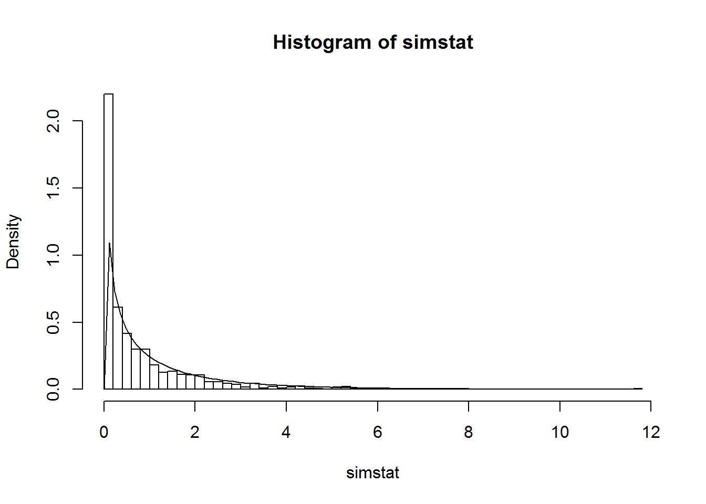